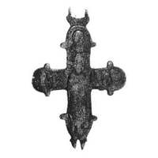

Catalog › CE-0878 · KOR2003-II.3.1.1
Valvă de revers cu prinț cu model de biserică în mâna stângă și trei sfinți în medalioane, imagini șterse
sec. XII (1101–1200) · Veliki Novgorod, Rusia · Muzeul-rezervație Unit de Stat din Novgorod (NGOMZ), Veliki Novgorod, inv. КМ-25291/Аз-360
single valve of a reliquary cross, aramă; c. XII (1101–1200); found at Veliki Novgorod, Rusia; kept at Muzeul-rezervație Unit de Stat din Novgorod (NGOMZ), Veliki Novgorod.


Identificare
- Categorie
- Valvă izolată
- Material
- Aramă
- Tehnică
- Turnare în relief
- Dimensiuni
- Î 58 × L 50 × Gr 3 mm
Iconografie
- Revers
- Sf. Boris și Gleb
- Descriere revers
- Valvă de revers cu imaginea centrală a unui prinț ținând în mâna stângă un model de biserică și trei imagini de piept ale sfinților în medalioane; toate imaginile sunt șterse din cauza turnărilor repetate și a uzurii. Baza balamalelor de sus este decorată cu crestătură oblică.
Datare și atribuire
- Datare
- sec. XII (1101–1200)
- Centru
- Necunoscut
- Tipologie
- Korzukhina–Peskova 2003, tip II 3 1
Descoperire
- Localitate
- Veliki Novgorod
- Țară
- Rusia
- Context
- Așezare
- Anul
- 1969
Păstrare și referințe
- Colecție
- Muzeul-rezervație Unit de Stat din Novgorod (NGOMZ), Veliki Novgorod
- Nr. inventar
- КМ-25291/Аз-360
- Bibliografie
- G. F. Korzukhina, A. A. Peskova, Древнерусские энколпионы. Нагрудные кресты-реликварии XI–XIII вв., Sankt-Petersburg, 2003 [Korzukhina–Peskova 2003], p. 88, cat. nr. II 3 1/1, reprodusă la Табл. 41 (planșe, p. 283). Bibliografie citată în sursă: Янин 1978, 125, рис. 4; Седова 1981, 57, рис. 17, 3.
- Figura
- Табл. 41
- Planșe
- Korzukhina–Peskova 2003, Табл. 41 (planșă fără paginație proprie în PDF; p. 283 tipărită)
- Observații
- Datare după Peskova: sec. XII. Circumstanțe: Săpături 1969, șantierul Tihvin, stratul 18, careul 20; găsită în strat de început XIII. Foto: G. N. Kojina (NGOMZ). Coordonate: nu sunt date în sursă.
Citare: Corpus Encolpiorum, CE-0878, Valvă de revers cu prinț cu model de biserică în mâna stângă și trei sfinți în medalioane, imagini șterse, https://vitaliejosanu1979-ux.github.io/primul-meu-proiect/piese/KOR2003-II.3.1.1/ (accesat 2026-10-17).